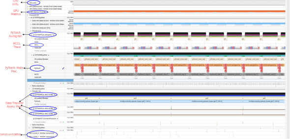
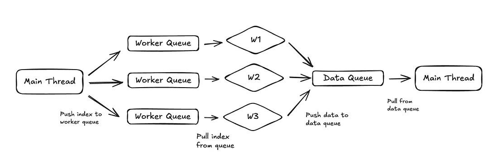
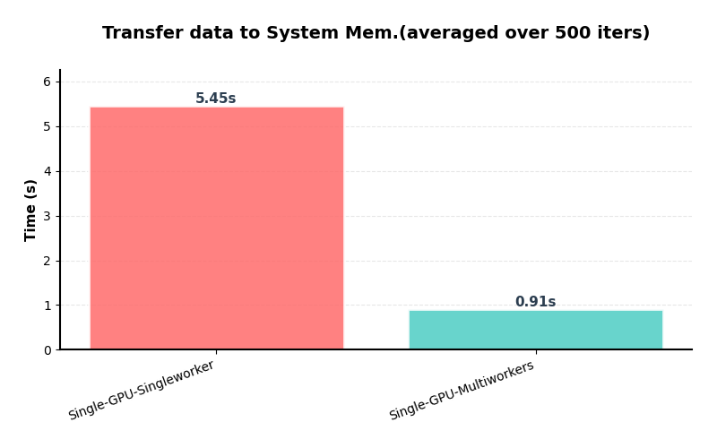
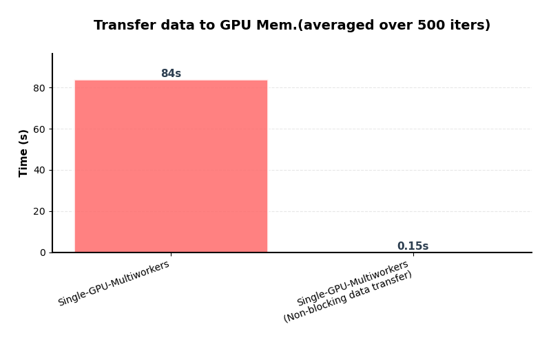
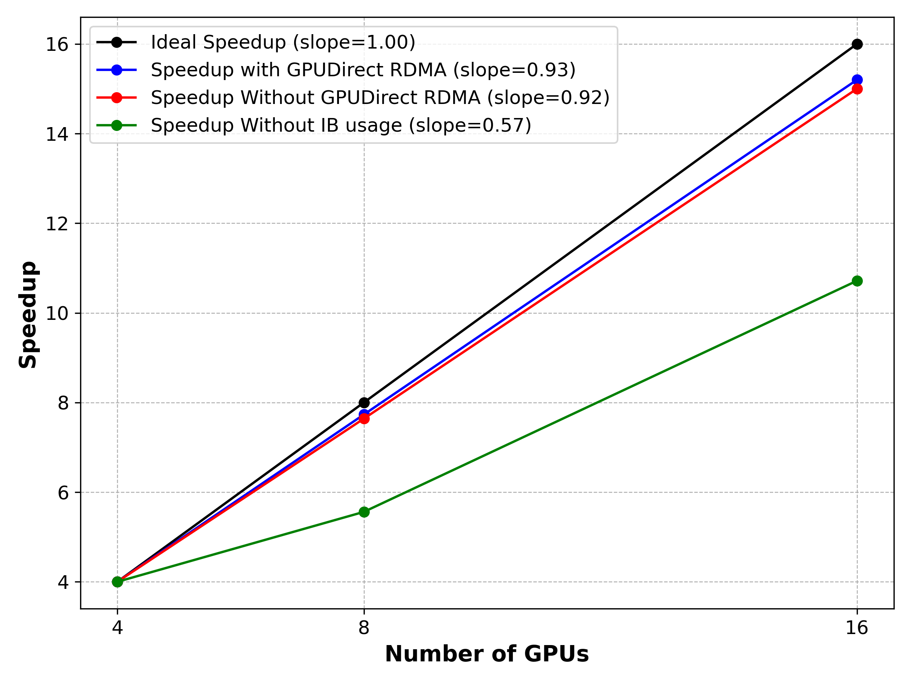

AI Profiling
Javad Kasravi
February 10, 2026
Agenda
- Performance Terminology
- Node Communications
- NVIDIA AI Profiling tools
- Single GPU training
- Distributed Data Parallel (DDP)
- Single node training
- Multi node training
- DDP scaling
Performance Terminology
Latency: the time it takes for one GPU or node to start exchanging information with another GPU or node.
Bandwidth: The maximum amount of data that can be transferred per unit of time between GPUs, CPUs, or nodes.
Host: CPU + system memory.
Device: GPU + GPU memory.
Single Node Communications
Base System

Naive communication
Data Path:

PCI Bus Peer-to-Peer (P2P) communication
Data Path:

GPUDirect P2P communication (NVLink)
Data Path

Throughput Comparison
| Communication Type | Throughput |
|---|---|
| Naive communication | ~16 GB/s 🐢 |
| PCIe Bus P2P communication | ~32 GB/s 🚗 |
| GPUDirect P2P communication | 600 GB/s total per GPU 🏎️ |
Multinode Commumications
GPUDirect Without RDMA Communication

GPUDirect With RDMA Communication

Throughput Comparison
| Communication Type | Throughput |
|---|---|
| GPUDirect Without RDMA | ~16 GB/s 🐢 |
| GPUDirect With RDMA | ~ 50 GB/s (2 HDR InfiniBand) 🏎️ |
AI Profiling?
NVIDIA profiling Tools

Nsight Systems GUI
Go to the following link and download the Nsight System 1.3.2025:
Run Profiling
Inside of run_profile.sh
nsys profile \
--duration=30 \
--delay=200 \
--gpu-metrics-device=all \
--nic-metrics=true \
--stop-on-exit=false \
--trace=nvtx,cuda,osrt \
--python-sampling=true \
--python-sampling-frequency=1 \
--cuda-memory-usage=true \
--force-overwrite=true \
--python-functions-trace=profiler/config/profiling.json \
--output=nsys_logs/nsys_logs_rank_${RANK} \
--python-backtrace=cuda \
--cudabacktrace=all \
python -u "$SCRIPT_NAME" "$@"Run Profiling
Inside of profiler/config/profiling.json
We also trace the NVTX trace
for step in range(num_steps):
with ExecutionTimer("data_loading (to Sys. mem)", profile=True) as t:
src, tgt = next(train_iter)
with ExecutionTimer("data_movement (to GPU mem)", profile=True) as t:
src, tgt = src.to(device, non_blocking=False), tgt.to(device, non_blocking=False)
with ExecutionTimer("forward_step", profile=True) as t:
output = model(src)
...Nsight Systems (Deep Learning App.)

Single GPU Single Process
Only the main process transfers data to system memory.
Single GPU Single Process
Move the trace file to your local machine by running:Use + and − keys to zoom in and out
📘 Exercise
- Find the main Python process with CUDA HW thread
- Explore PyTorch & NVTX annotations (main Python process)
- How long does it take until one iteration is finished (data transfers, forward, backward, …)?
- Explore CUDA HW thread and what is the GPU peak memory?
- Explore PyTorch & NVTX annotations (inside CUDA HW)
- Why are some annotations missing inside CUDA HW?
Single GPU Multiprocesses
Single GPU Multiprocesses

Main process send indexes to workers
- index 0 → worker 1
- index 1 → worker 2
- index 2 → worker 3
- index 3 → worker 1
Single GPU Multiprocesses
📘 Exercise
-
Find
pt_data_workerprocesses - How many pt_data_worker traces are created by Nsys?
- How can we determine that this setup is not I/O-bound?
Single GPU Multiprocesses

Single GPU Multiprocesses
📘 Exercise
- Check one iteration of training
- Which operation dominates the training time (per iteration)?
Single GPU Multiprocesses (Asyn. Transfer)

Single GPU (Asyn. Transfer)
Single GPU Multiprocesses (Asyn. Transfer)
📘 Exercise
- Check one iteration of training
- Which part of code dominates the training time (per iteration)?
Single GPU Multiprocesses (Asyn. Transfer)

DDP
DDP
Trace Path:
-
Multi_GPUs/DDP/Single_node/Report_03_DDP_one_node/nsys_logs
📘 Exercise
- Which intra-node communication is active (PCIe or NVLink)?
- Check NIC metrics (why? There is some traffic on one node)
- Check the NCCL trace inside the GPU
- Check the number of all-reduce calls
- Check the overlap between the all-reduce calls and the compute kernels inside the GPU
DDP
Trace Path:
-
Multi_GPUs/DDP/Multi_nodes/Report_03_DDP_multi_nodes/GPU_Direct_RDMA_enable/nsys_logs
📘 Exercise
- Which intra-node communication is active (PCIe or NVLink)?
- Check NIC metrics & compre the traffic with previous run
- Do you think the training will be scalable?
DDP
Trace Path:
-
Multi_GPUs/DDP/Multi_nodes/Report_03_DDP_multi_nodes/GPU_Direct_RDMA_disable/nsys_logs
📘 Exercise
- Which intra-node communication is active (PCIe or NVLink)?
- Do you think the training will be scalable?
DDP
Trace Path:
-
Multi_GPUs/DDP/Multi_nodes/Report_03_DDP_multi_nodes/NOT_IB_USAGE
📘 Exercise
- Which intra-node communication is active (PCIe or NVLink)?
- Check the overlap between the all-reduce calls and the compute kernels inside the GPU
- Do you think the training will be scalable?
DDP scaling
